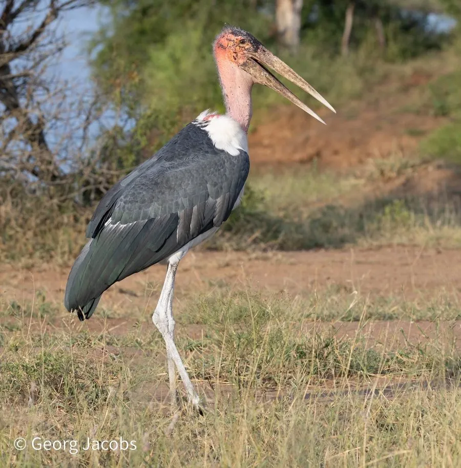

鸟类 · 动物界
秃鹳 Leptoptilos crumenifer

非洲大型鹳类，头和颈裸露、喉部垂着大喉囊，常跟随兽群和人类活动捡食腐肉，被称为草原上的“拾荒者”。
- 分类
- 门脊索动物门纲鸟纲目鹳形目科鹳科属秃鹳属
- 栖息环境
- 非洲的草原、湿地、河湖岸边与村庄附近，常随兽群活动
- 地理分布
- 非洲撒哈拉以南广泛分布，中国无分布
- 保护级别
- IUCN 无危（LC）；非中国分布物种
物种志
秃鹳体长 115–152 cm，体重 4–9 kg，翼展 210–250 cm，是体形最大的鹳类之一。它的头和颈部裸露，皮肤呈粉红色，喉部垂着一个粉红色的大喉囊，背部和翅膀为黑灰色，腹部白色，喙粗壮而长。它站立时显得高大而略显笨重，飞行时颈部缩在肩上。
秃鹳广泛分布于撒哈拉以南非洲的草原、湿地和村庄附近，常跟随兽群、渔民和垃圾场捡食腐肉、鱼和昆虫。它是典型的食腐鸟类，能清理环境中的动物尸体，但也吃活的小动物和鸟蛋。繁殖期在树上筑巢，每窝产卵 2–3 枚，孵化约 30 天。由于适应力强，秃鹳被列为无危物种；它并非中国分布物种。
形态与习性
- 食性腐肉为主，也吃鱼、昆虫和鸟蛋
- 体长115–152 cm
- 体重4–9 kg
- 翼展210–250 cm
- 繁殖每窝 2–3 枚卵，孵化约 30 天
- 寿命野外约 20–30 年
趣味知识
- 秃鹳的头和颈部裸露，喉部垂着粉红色的大喉囊。
- 它是体形最大的鹳类之一，常跟随兽群和渔民捡食腐肉。
- 秃鹳是草原上的“清道夫”，能帮助清理动物尸体。